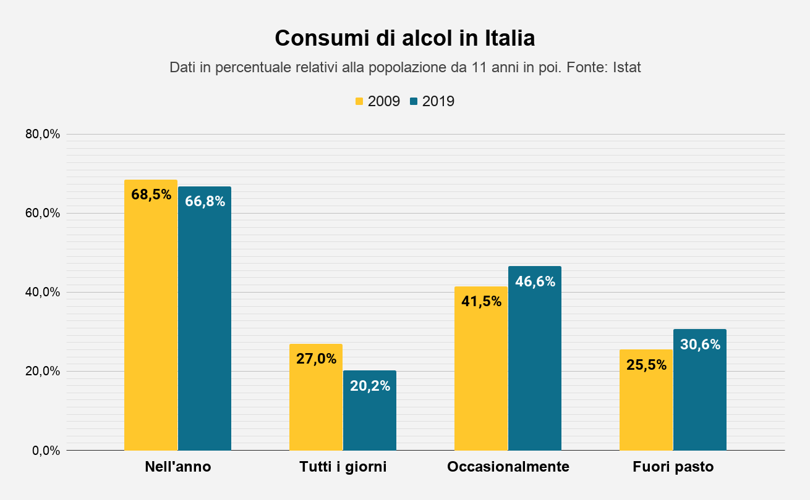

AVVISO: Questo sito è programmato solo per uso su PC e non dispositivi mobili, per visualizzare correttamente il layout, usare un PC.
Cosa sono le droghe?
Le droghe sono sostanze chimiche che possono alterare il funzionamento del corpo o della mente quando assunte. Possono avere effetti terapeutici (come i farmaci per curare le malattie) oppure possono essere utilizzati come divertimento, spesso portando a dipendenza o danni alla salute.
Come agiscono le droghe?
In generale le droghe agiscono sui neurotrasmettitori,modificando,
alterando o danneggiando la trasmissione degli stimoli nervosi con
effetti sulla funzionalità del cervello.
CATEGORIA
PRINCIPALI EFFETTI
ESEMPI
TIPO DI DIPENDENZA
NARCOTICI
PRODUCONO INIZIALE EUFORIA SEGUITA DA SEDAZIONE E SONNO
ELEVATA DIPENDENZA FISICA E PSICHICA
ALLUCINOGENI EUFORIZZANTI
PRODUCONO SENSO DI EUFORIA E ALTERAZIONI DELLE PERCEZIONI SPAZIO-TEMPORALI
ECSTASY, LSD (ARTIFICIALI),
MARIJUANA, HASHISH
(DERIVATE DALLA CANAPA
INDIANA)
SIGNIFICATIVA
DIPENDENZA FISICA
DEPRESSORI DEL
SISTEMA NERVOSO
PROVOCANO RIDUZIONE
DELL’ANSIA E SEDAZIONE
ALCOL, BARBITURICI,
BENZODIAZEPINE
SIGNIFICATIVA
DIPENDENZA FISICA E
PSICHICA
STIMOLANTI DEL
SISTEMA NERVOSO
PROVOCANO EUFORIA,
ECCITAZIONE, AUMENTO
DEL LIVELLO DI
ATTENZIONE
AMFETAMINE, COCAINA
ELEVATA DIPENDENZA
PSICHICA
L' alcol
L'alcol è una droga a tutti gli effetti capace di indurre fenomeni di tolleranza e di dipendenza, psicologica e fisica.
L'alcolismo
Il concetto di alcolismo fa riferimento ad una eccessiva ingestione
volontaria di alcol etilico che nella sua forma acuta si manifesta con ubriachezza.

Crediti
Programmazione HTML/CSS/JS e Hosting:
Facchinetti Lorenzo
Design:
- Pietro Stocco
- Cristian Pirola
- Lorenzo Zanella